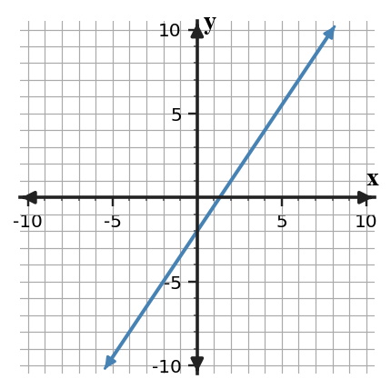
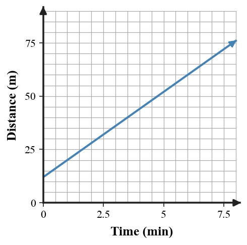
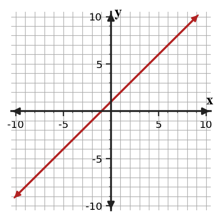
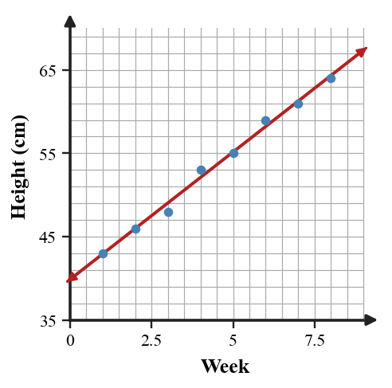
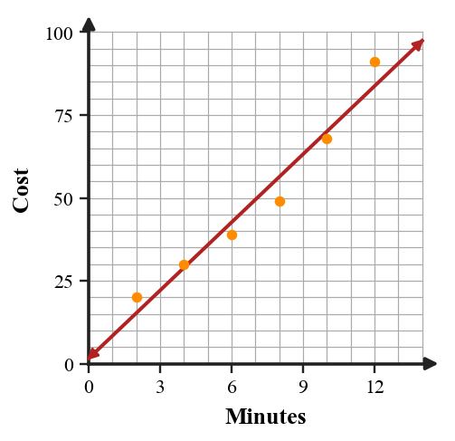

Unit 2 Progress Tracker
Students will interpret, represent, solve, and model linear relationships by using slope as a measure of constant rate of change across graphs, tables, equations, data, and contextual situations.
I need more instruction and practice.
I understand most of it but need more practice.
I can do this independently.
I can teach it.
Progress Tracking
Progress Tracking
Evidence
Progress Tracking
Evidence
Progress Tracking
Evidence
Progress Tracking
Evidence
Learning Ladder
| Rung | I Can Statement | DOK | Level |
|---|---|---|---|
| 8 | I can design a linear model from data, interpret its slope and intercept, and assess whether the model supports a prediction. | DOK 4 | Above |
| 7 | I can construct and revise a linear representation so a graph, table, equation, and context communicate the same relationship. | DOK 4 | Above |
| 6 | I can critique a claim about which linear relationship changes faster using evidence from multiple representations. | DOK 3 | Essential |
| 5 | I can determine which linear equation, graph, or table best models a situation and support the choice with slope and intercept evidence. | DOK 3 | Essential |
| 4 | I can formulate a linear equation from a graph, table, or situation. | DOK 2 | Essential |
| 3 | I can apply slope and intercept information to graph and interpret a linear function. | DOK 2 | Essential |
| 2 | I can use slope vocabulary to connect rate of change, direction, and steepness. | DOK 1 | Essential |
| 1 | I can apply coordinate plane conventions to read points, axes, and intercepts. | DOK 1 | Essential |
Student Goal Setting
Unit 2 Practice by Depth of Knowledge
Format: 3-5 minute warm-up, vocabulary check, representation recognition, or exit ticket
Purpose: DOK 1 checks whether students can read linear features, use slope language, and connect coordinate plane details to the basic meaning of a linear relationship.
Assessment Ideas
- Slope from Points and Change Ratios Can Be Assessed After Section 2.1 - Calculate slope from coordinate pairs and change statements; simplify $\Delta y/\Delta x$ ratios; distinguish increasing, decreasing, zero, and undefined slopes.
- Graphing Points and Slope Moves Can Be Assessed After Section 2.2 - Use slope-intercept starting points to name graphing moves; read slope and $y$-intercept from equations; plot given points on a coordinate plane.
- Slope-Intercept Equation Basics Can Be Assessed After Section 2.3 - Translate slope, intercept, table, and verbal starting-value information into slope-intercept equations; name $m$ and $b$; connect initial values to $x=0$.
- Compare Slopes and Starting Values Can Be Assessed After Section 2.4 - Interpret slopes and starting values from equations and tables; compare steepness, rate magnitude, and initial values; prepare features for representation comparison.
DOK 1 data shows whether students can compute and name foundational linear features before longer modeling tasks: slope from coordinates and change statements, graphing start-and-move steps, slope-intercept pieces, and basic feature comparisons.
Find the vertical change, horizontal change, and slope from $A(-3,4)$ to $B(5,0)$. Write the slope as $\frac{\Delta y}{\Delta x}$.
Use the graph shown. State whether the slope is positive, negative, zero, or undefined. Then state whether the $y$-intercept is positive, negative, or zero.

Use adjacent rows to find the constant rate of change.
| $x$ | 0 | 2 | 4 | 6 |
|---|---|---|---|---|
| $y$ | -5 | -1 | 3 | 7 |
For $y=-\frac{3}{4}x+6$, which value is the $y$-intercept?
- $-\frac{3}{4}$
- $6$
- $x$
- $y$
A line is described by $x=-2$. State whether the graph is horizontal or vertical, then state the slope category.
A delivery van starts with $40$ boxes and unloads $5$ boxes at each stop. Which value represents the slope, and what units should be attached to it?
A line of fit predicts $68$ points, but the actual data value is $73$ points. Find the residual using actual value minus predicted value.
For a slope of $\frac{2}{5}$, describe one possible rise and run. Then state whether the line increases or decreases from left to right.
Format: Mini-quiz, graph/table task, matching task, partner check, or short written task
Purpose: DOK 2 reveals whether students can carry out multi-step linear procedures and connect slope and intercept information across two representations.
Assessment Ideas
- Interpret Constant Rates Can Be Assessed After Section 2.1 - Apply unit rates in cost, distance, and growth contexts; calculate outputs or inputs from rates; verify constant rate of change across uneven input intervals.
- Graph Lines and Intercepts Can Be Assessed After Section 2.2 - Construct line graphs from points, slopes, and intercepts; estimate $x$-intercepts from graphs; use intercepts to graph equations in standard form.
- Write Linear Equations Can Be Assessed After Section 2.3 - Formulate linear equations from tables, point pairs, and contexts; calculate slope and intercept using substitution; evaluate contextual outputs from the model.
- Compare Linear Plans Can Be Assessed After Section 2.4 - Use slopes and starting values to compare plans across equations, tables, and verbal models; calculate values at specified inputs; solve catch-up points for competing linear relationships.
DOK 2 data shows whether students can carry out multi-step linear procedures: applying unit rates, graphing with intercepts, writing equations, and comparing plan values. It also reveals whether errors are procedural or representation-connection gaps.
A club charges a setup fee of $25 plus $4 for each event ticket. Write a cost expression for $n$ tickets, find the cost for $6$ tickets, and explain what the slope means.
Graph $y=-\frac{1}{2}x+3$ on the coordinate plane. Label the $y$-intercept and one other point that follows the slope.

The input gaps are not all the same. Determine whether the rate of change is constant, and write one sentence with units.
| Time (hr) | 0 | 2 | 5 | 7 |
|---|---|---|---|---|
| Distance (mi) | 10 | 22 | 40 | 52 |
A linear relationship passes through $(2,11)$ and $(6,23)$. Write an equation in slope-intercept form, then predict $y$ when $x=10$.
The graph shows a distance model. Estimate the starting distance and rate of change. Then use the model to predict the distance at $6$ minutes.

Plan A costs $30 plus $7 per use. Plan B has no starting fee and costs $12 per use. Write equations, compare the costs for $4$ uses, and find the number of uses when the costs are equal.
Choose two reasonable points from the table to write an approximate linear model. Use your model to predict the value for day $8$.
| Day | 1 | 2 | 3 | 4 | 5 |
|---|---|---|---|---|---|
| Free throws made | 9 | 13 | 16 | 20 | 23 |
Complete a table for $y=-2x+9$ using $x=0,1,2,3$. Then plot the points on the coordinate plane and estimate the $x$-intercept.
Format: Constructed response, model critique, strategy comparison, representation analysis, or discourse prompt
Purpose: DOK 3 reveals whether students can reason with linear features, critique claims, and choose representations that fit a situation.
Assessment Ideas
- Slope Reasonableness and Table Strategies Can Be Assessed After Section 2.1 - Critique slope claims using units, context, and realistic comparisons; correct sign reasoning from coordinate changes; construct table-completion strategies from a given slope and known point.
- Critique Graphs and Tables Can Be Assessed After Section 2.2 - Analyze whether graphs, equations, and tables agree; locate mismatched values or graphing errors; justify corrections with slope and intercept evidence.
- Analyze Equation Forms and Methods Can Be Assessed After Section 2.3 - Analyze equivalent equation forms for the same line; compare slope-substitution and back-to-zero methods; construct equation-writing strategies that avoid guessing from graphs.
- Analyze Linear Model Fit Can Be Assessed After Section 2.5 - Evaluate model-table agreement and correct mismatched predictions; interpret what a constant slope assumes about data behavior; judge whether scatter plots and tables can share one linear model.
DOK 3 evidence shows whether students can use slope and intercept features to justify, critique, and choose methods, not just calculate. It pinpoints whether students can evaluate reasonableness, fix mismatches across representations, and judge model fit from data.
A student says the slope from $(6,-1)$ to $(2,7)$ is positive because the $y$-values increase from $-1$ to $7$. Critique the reasoning and give slope evidence that supports your conclusion.
Compare the graph shown with the table. Decide whether they could represent the same linear relationship, and justify your decision using slope and intercept evidence.

| $x$ | 0 | 2 | 4 | 6 |
|---|---|---|---|---|
| $y$ | 3 | 5 | 7 | 9 |
A table has points $(2,7)$, $(4,13)$, and $(6,19)$. One student works backward to $x=0$; another calculates slope and substitutes a point into $y=mx+b$. Compare the methods and choose which is more efficient for this table.
Plan A is modeled by $A=45+4m$. Plan B is modeled by $B=15+9m$. A student claims Plan B is always cheaper because it starts lower. Critique the claim using at least one calculation and a sentence about slopes.
A plant-height model is $h=3.5w+12$, where $w$ is weeks. Analyze what the slope assumes about the data pattern. Describe one type of evidence that would make this model weak.
The model $y=-2x+14$ and the table are supposed to match. Find the first mismatch, explain how you know, and correct the table value.
| $x$ | 0 | 1 | 2 | 3 |
|---|---|---|---|---|
| Predicted $y$ | 14 | 12 | 11 | 8 |
Use the scatter plot to construct a strategy for predicting a value near $x=9$. Explain what evidence you would check before trusting the prediction.

Two students compare $y=5x-4$ with a table. One makes a table from the equation; the other finds the table’s slope and starting value. Explain when each method is useful and choose one for this table.
| $x$ | 0 | 3 | 6 | 9 |
|---|---|---|---|---|
| $y$ | -2 | 13 | 28 | 43 |
Format: Brief performance task, modeling task, critique-and-revise task, design task, or capstone synthesis task
Purpose: DOK 4 reveals whether students can synthesize tables, graphs, equations, contexts, and data into coherent linear models.
Assessment Ideas
- Create Multi-Representation Linear Relationships Can Be Assessed After Section 2.4 - Design linear relationships that satisfy slope, intercept, and point constraints; represent each relationship with equations, tables, graphing points, and contexts; justify how the constraints are met.
- Revise Graph Plans and Intersections Can Be Assessed After Section 2.4 - Adapt flawed graph plans by correcting intercepts, points, and axis labels; design intersecting lines with different slopes; verify equations satisfy the shared point.
- Recommend Linear Comparisons Can Be Assessed After Section 2.4 - Evaluate competing plans at multiple inputs; choose efficient representations for break-even comparisons; create comparison contexts where the better choice changes.
- Revise Linear Data Models Can Be Assessed After Section 2.5 - Develop revisions to lines of fit using scatter-plot evidence; design small data sets with plausible variation; evaluate limitations and reliability of extrapolated predictions.
DOK 4 tasks reveal whether students can synthesize linear relationships across contexts, equations, tables, graph plans, comparisons, and data-model revisions. The evidence shows who can design, revise, and defend a model within constraints and limitations.
Create a short real-world context with a constant rate of change of $-3$ units per step and a starting value of $24$. Include a table with four input values, an equation, and one sentence explaining the slope.
A linear relationship has slope $\frac{5}{2}$ and contains the point $(4,9)$. Build matching representations: a slope-intercept equation, a table with at least four rows, two graphing points, and a verbal rate statement.
Design two linear relationships that have the same value at $x=6$ but have different slopes. Provide equations, a small table for each relationship, and a sentence explaining how someone could compare them.
Company A charges $60 plus $0.08 per page. Company B charges $20 plus $0.14 per page. Recommend a company for a $400$-page job and a $900$-page job. Justify with equations or a table.
A first cost model is $C=5m+10$, but the scatter plot suggests the cost grows faster after about $8$ minutes. Revise the model or describe a limitation for predictions beyond the collected data. Support your decision with evidence from the graph.

Design a small data set of six points that could be modeled by a line with positive slope near $3$. Include one point slightly above the trend and one point slightly below it, then write a reasonable line-of-fit equation and one prediction question.
Create a comparison context with two plans where one plan has the lower starting value and the other has the lower rate of change. Include equations and identify a value where the better choice changes.
Design a graphing plan for a line where $y$ decreases by $6$ whenever $x$ increases by $2$, and the line passes through $(0,18)$. Include a table, two graphing points, a matching context sentence, and one limitation of the model.